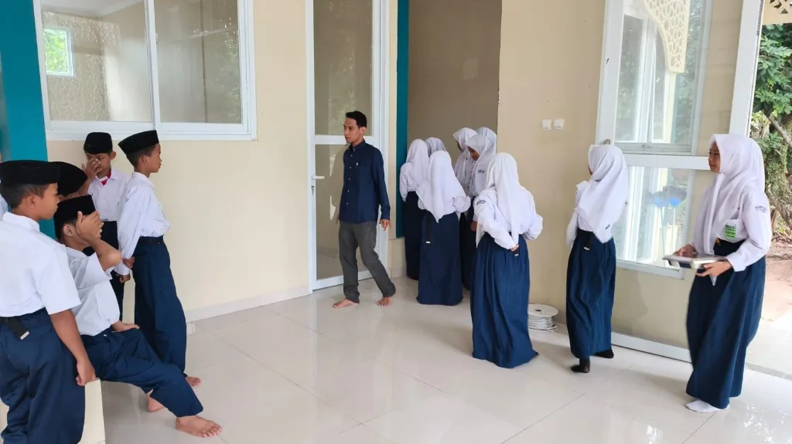
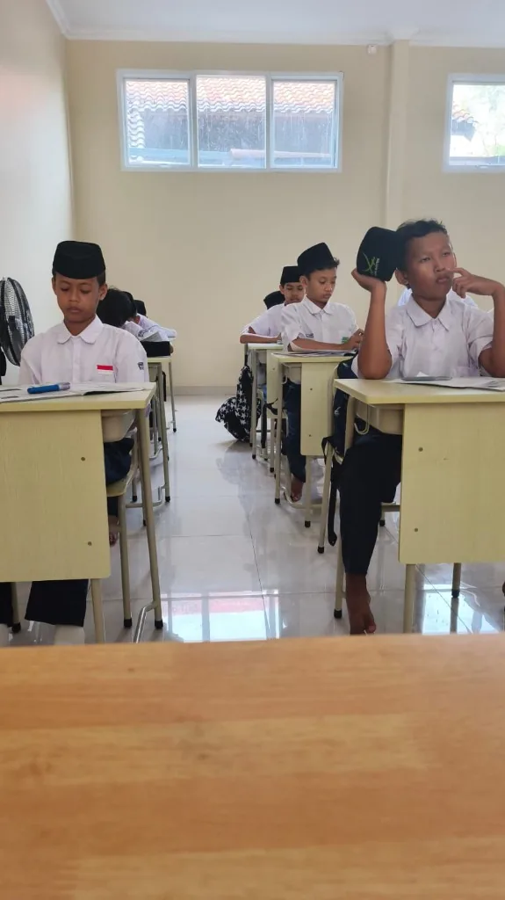
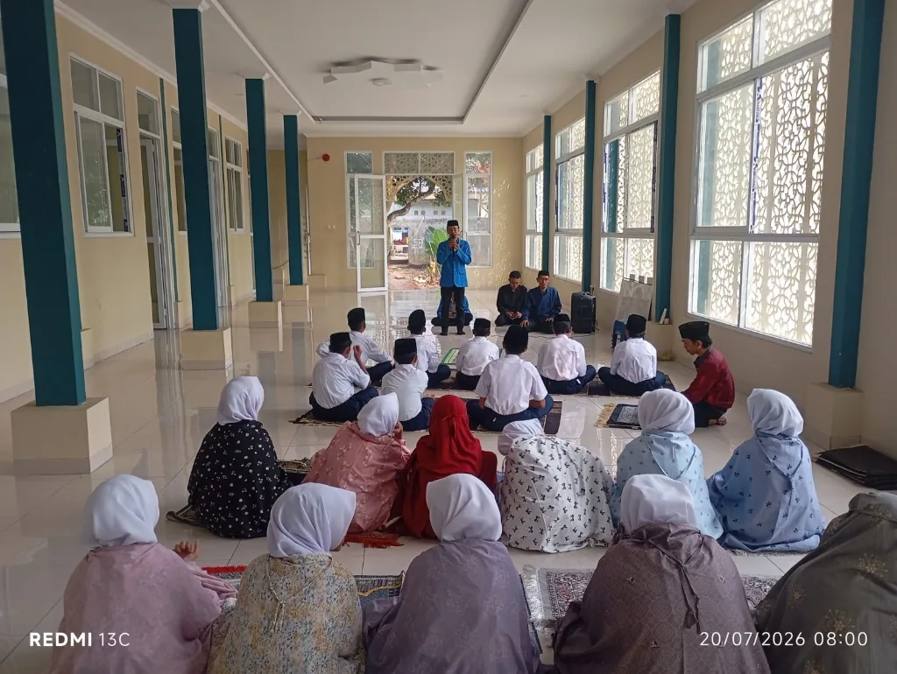
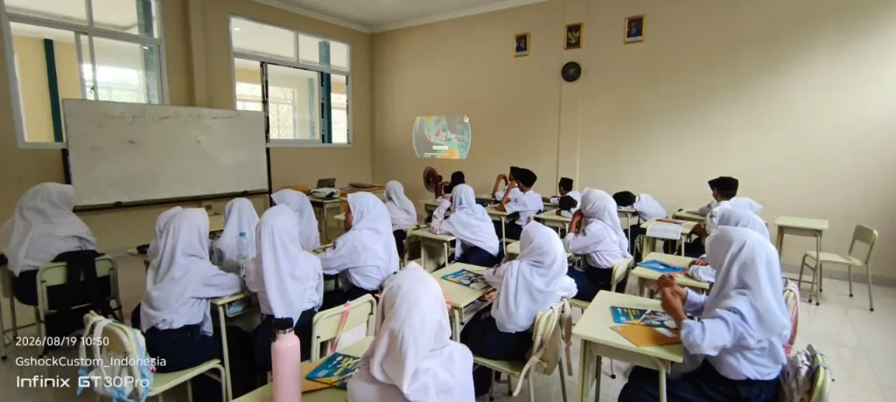
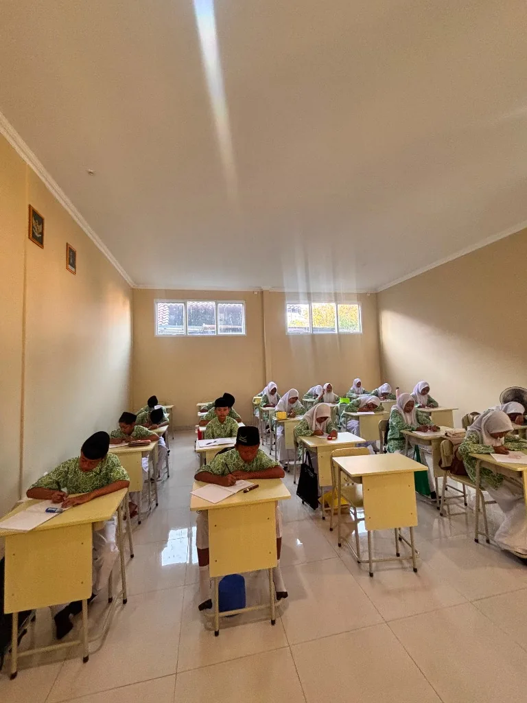
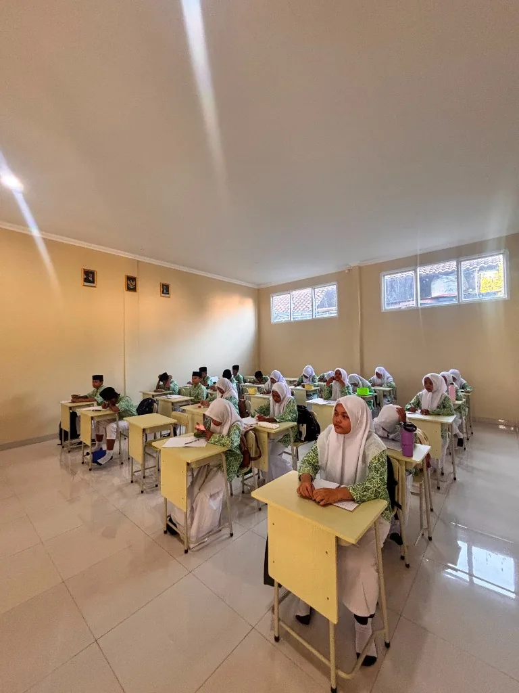
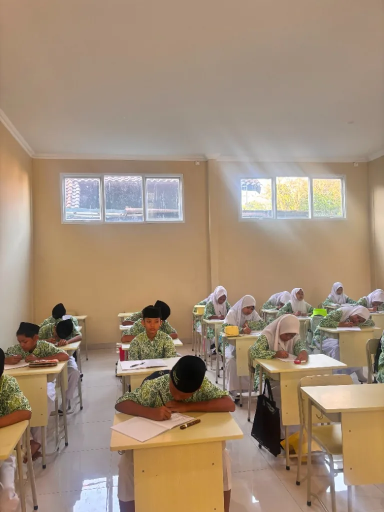

Membentuk Generasi Berilmu, Berkarakter, dan Siap Menghadapi Masa Depan
Pendidikan yang mengembangkan kemampuan akademik, karakter, kemandirian, dan potensi setiap peserta didik melalui pembiasaan akhlak islami, Sekolah Alam terpadu, dan bimbingan Tahfidz Al-Qur'an.
Gallery Sekolah
Klik pada foto untuk memperbesar pratinjau dalam Lightbox








Mengapa Memilih SMP Annida?
6 keunggulan utama sistem pendidikan kami dalam membentuk generasi tangguh, islami, dan berwawasan luas.
Pendidikan Akademik
Mengintegrasikan kurikulum nasional dengan materi sains, sosial, dan nalar berpikir logis yang mendalam.
Pendidikan Karakter
Penanaman adab islami harian, integritas kejujuran, dan pembiasaan shalat berjamaah serta dhuha.
Pendampingan Guru
Bimbingan penuh perhatian dari asatidzah berdedikasi tinggi yang bertindak sebagai mentor dan sahabat siswa.
Literasi Digital
Penguasaan perangkat teknologi secara bijak untuk riset ilmiah, kolaborasi online, dan produktivitas kreatif.
Pengembangan Potensi
Eksplorasi bakat siswa melalui beragam ekstrakurikuler kepemimpinan, kewirausahaan, dan olahraga.
Lingkungan Positif
Suasana belajar yang asri dan aman berbasis konsep Sekolah Alam, jauh dari kebisingan kota dan polusi.
Pilihan Program Pendidikan
Sesuaikan metode belajar yang paling tepat untuk pertumbuhan optimal putra-putri Anda.
Program Reguler (Non-Pondok)
Program sekolah formal reguler harian yang memadukan kelas inklusif akademik dengan eksplorasi alam terbuka, mentoring agama, dan kepemimpinan. Sangat cocok untuk siswa yang berdomisili di sekitar Bekasi dan pulang setiap sore.
Pilih RegulerProgram Pondok (Boarding School)
Sistem asrama terpadu yang memadukan kurikulum pendidikan umum dengan program hafalan Al-Qur'an (Tahfidz) intensif, pembinaan akhlak mulia 24 jam, penguasaan bahasa Arab & Inggris harian, serta ibadah berjamaah mandiri.
Pilih PondokSehari di SMP Annida
Gambaran rutinitas produktif dan menyenangkan para santri dari pagi hingga sore.
Kedatangan & Dhuha Berjamaah
Penyambutan ramah oleh guru piket, penertiban perlengkapan, dan pembiasaan shalat Dhuha berjamaah di mushala.
Kegiatan Belajar Mengajar (KBM)
Sesi pembelajaran interaktif sains, matematika, studi sosial, bahasa, dan Al-Qur'an dengan konsep praktek langsung di alam.
Istirahat & Snack Sehat
Mengisi energi dengan snack buah/roti sehat dan interaksi akrab antarsiswa di bawah naungan pepohonan rindang.
Shalat Dzuhur & Makan Siang
Pembinaan kedisiplinan ibadah shalat fardhu berjamaah dan makan siang bernutrisi seimbang bersama para guru.
Pengembangan Diri & Tahfidz
Setoran hafalan Qur'an harian, latihan kepemimpinan kelompok, olahraga memanah/futsal, dan pembekalan kewirausahaan mandiri.
Pulang (Reguler) / Kegiatan Asrama (Pondok)
Kepulangan tertib untuk siswa reguler, sedangkan santri pondok mulai mempersiapkan diri untuk mentoring asrama sore.
Rincian Biaya & Simulator Interaktif
Informasi biaya transparan dan alat bantu estimasi anggaran pendaftaran secara instan.
payments Tarif Biaya Pendidikan
info Catatan Penting
Biaya masuk awal sudah mencakup seragam sekolah (3 stel), sewa lemari asrama (khusus pondok), modul kitab tahfidz, kasur asrama (pondok), rapot, pas foto, dan kegiatan tahunan semester ganjil. Tidak ada biaya pembangunan tambahan tersembunyi.
Simulator Estimasi Anggaran
Alur Pendaftaran & FAQ
Pahami 6 tahapan pendaftaran online dan temukan jawaban dari pertanyaan yang sering diajukan.
Isi Formulir
Lengkapi formulir biodata online di web.
Upload berkas
Unggah Akta, KK, dan foto siswa digital.
Verifikasi
Pengecekan berkas oleh Panitia PPDB.
Pembayaran
Penyelesaian administrasi pendaftaran.
Tes Seleksi
Tes akademik dasar & wawancara ortu.
Pengumuman
Kelulusan & proses daftar ulang kelas.
Ya, benar. Seluruh tahapan pendaftaran mulai dari pengisian biodata, pengunggahan dokumen kelengkapan berkas fisik, konfirmasi transfer biaya pendaftaran, hingga pengumuman kelulusan dilakukan secara mandiri lewat portal PPDB online ini.
Calon siswa wajib mengunggah pindaian (scan) Kartu Keluarga (KK), Akta Kelahiran, Rapor semester terakhir sekolah asal (SD/MI), serta pas foto berlatar merah/biru ukuran 3x4.
Tes seleksi masuk didesain ramah anak, meliputi asesmen lisan kelancaran membaca Al-Qur'an (makharijul huruf), tes potensi akademik dasar (matematika dasar & literasi bahasa), serta wawancara komitmen orang tua murid.
Kami menyediakan potongan harga khusus saudara kandung (sibling discount), beasiswa prestasi akademik/tahfidz minimal 5 juz, serta skema bantuan subsidi khusus bagi yatim dan dhuafa yang divalidasi berkas ekonominya oleh panitia.
Hubungi Kantor Panitia PPDB
Untuk pertanyaan lebih mendalam mengenai kurikulum Sekolah Alam, fasilitas asrama pondok, atau kendala dalam portal pengunggahan berkas online, Anda dapat mengunjungi kantor kami atau menghubungi kami melalui saluran berikut:
Kampus SMP Annida
Gg. Al-Ikhlas No.47, Cibening, Setu, Bekasi, Jawa Barat 17320